Manual de uso · Julio 2026
Centro de Control y Panel Logístico, explicados paso a paso
Este manual cubre todo lo que puedes hacer en las dos herramientas internas de Camp Fest 2026, según tu rol: administrador, miembro de logística o líder de rama. Cada sección explica qué vas a ver en la pantalla, qué hace cada botón, y qué pasa después de tocarlo — con capturas reales de la propia herramienta, no dibujos ni maquetas.
Cómo entrar
Hay dos herramientas distintas, pero el inicio de sesión es igual en las dos: correo y contraseña. Esas credenciales las crea un administrador desde Administración → Nuevo usuario (lo vemos más adelante) y te las comparte por fuera del sistema — la herramienta no tiene "olvidé mi contraseña" ni registro abierto.
| Herramienta | Quién la usa normalmente | Qué encuentras ahí |
|---|---|---|
| Centro de Control | Administradores y perfiles de "control" | Todo el evento: incidentes, cronograma, inventario, inscripciones, notificaciones y administración |
| Panel Logístico | Equipo de logística (miembros y líderes de rama) | Registro de participantes, comunicación con Centro de Control, tareas de tu rama, cronograma y materiales |
- Abre la dirección de la herramienta que te corresponde.
- Escribe tu Correo y tu Contraseña en el formulario de inicio de sesión.
- Pulsa Iniciar sesión. Si los datos son correctos entras directo al panel; si no, verás el mensaje "Correo o contraseña incorrectos" y puedes intentar de nuevo.
- Arriba a la derecha siempre verás tu nombre y tu rol (por ejemplo "Mariana Rojas · Admin"). Cuando termines, usa el botón Cerrar sesión — sobre todo si usas un computador compartido.
Administrador — Centro de Control
Acceso completo: incidentes, cronograma, inventario, inscripciones, notificaciones y configuración del evento.
Si tu cuenta tiene el rol Admin, ves las seis pestañas de arriba: Panel, Cronograma, Inventario, Inscripciones, Notificaciones y Administración. Si tu cuenta tiene el rol Control, ves las mismas pestañas salvo Administración, y algunas herramientas de gestión (crear actividades, gestionar inventario, enviar correos masivos) no te aparecen — son exclusivas de Admin y se marcan así en cada sección.
PestañaPanel
Es la pantalla de inicio: un resumen de todo el evento en tiempo real, más la herramienta para registrar y dar seguimiento a incidentes. Se actualiza sola cada 7 segundos.
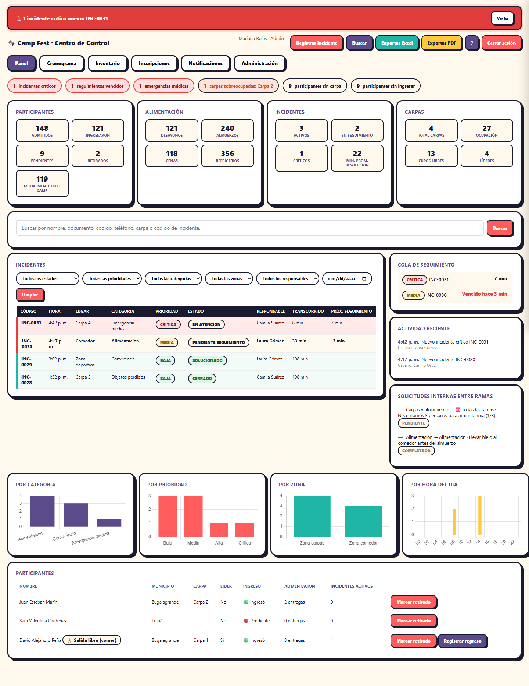
Chips de alerta
Justo debajo de las pestañas aparecen chips como 1 incidentes críticos o 9 participantes sin ingresar. Son clicables: al tocar uno, la tabla de incidentes se filtra automáticamente para mostrarte solo esos casos. Si no hay nada urgente, verás simplemente "Sin alertas activas".
Las 4 tarjetas de estadísticas
| Tarjeta | Qué muestra |
|---|---|
| Participantes | Admitidos, Ingresaron, Pendientes, Retirados, Actualmente en el camp |
| Alimentación | Desayunos, Almuerzos, Cenas, Refrigerios entregados en total |
| Incidentes | Activos, En seguimiento, Críticos, Minutos promedio de resolución |
| Carpas | Total de carpas, Ocupación, Cupos libres, Líderes asignados |
Buscar por nombre, documento, código, teléfono, carpa o incidente
- Escribe lo que buscas en el campo grande Buscar por nombre, documento, código, teléfono, carpa o código de incidente… (o pulsa el botón rojo Buscar de la barra superior para saltar directo ahí).
- Pulsa Buscar.
- Aparece una lista de resultados debajo. Si es un participante, al hacer clic se resalta su fila en la tabla de abajo; si es un incidente, se abre su panel de detalle.
Registrar un incidente
Este es el formulario que usa todo el equipo (Admin, Control y Logística) para dejar constancia de cualquier situación durante el evento.
- Pulsa el botón rojo Registrar incidente de la barra superior. Se despliega el formulario.
- Elige la Categoría (por ejemplo "Emergencia médica" o "Alimentación"). Apenas la eliges, aparece automáticamente la lista de responsables de esa categoría — quién de logística la atiende, con teléfono y zona.
- Elige la Prioridad: baja, media, alta o crítica.
- Opcional: elige la Zona y escribe el Lugar específico (ej. "Carpa 4").
- Opcional: escribe quién lo Reportó por (logística).
- Opcional: si el incidente involucra a un participante, escribe su Código de participante y sal del campo (tab o clic afuera) — el sistema busca ese código y te confirma "Vinculado a: [nombre]" o te avisa si no lo encuentra.
- Escribe la Descripción (obligatoria).
- Pulsa Guardar incidente. El incidente queda creado, la tabla se actualiza sola y el formulario se cierra.
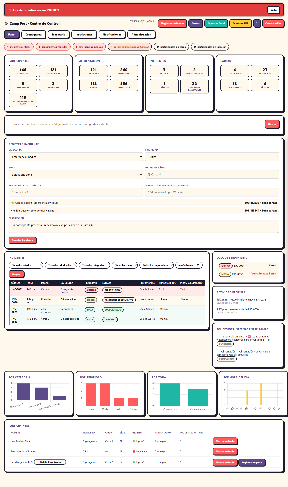
Filtrar y leer la tabla de incidentes
Encima de la tabla hay 6 filtros: Todos los estados, Todas las prioridades, Todas las categorías, Todas las zonas, Todos los responsables y una fecha. Cualquier combinación se aplica sola en cuanto la cambias — no hay que pulsar nada más. El botón Limpiar borra todos los filtros de una vez.
Columnas de la tabla: Código, Hora, Lugar, Categoría, Prioridad, Estado, Responsable, Transcurrido (cuánto tiempo lleva abierto) y Próx. seguimiento (cuánto falta, o "Vencido hace X min" si ya se pasó el plazo). Haz clic en cualquier fila para abrir su detalle completo.
Seguir un incidente hasta cerrarlo
Al hacer clic en una fila se abre un panel a la derecha con todo el caso.
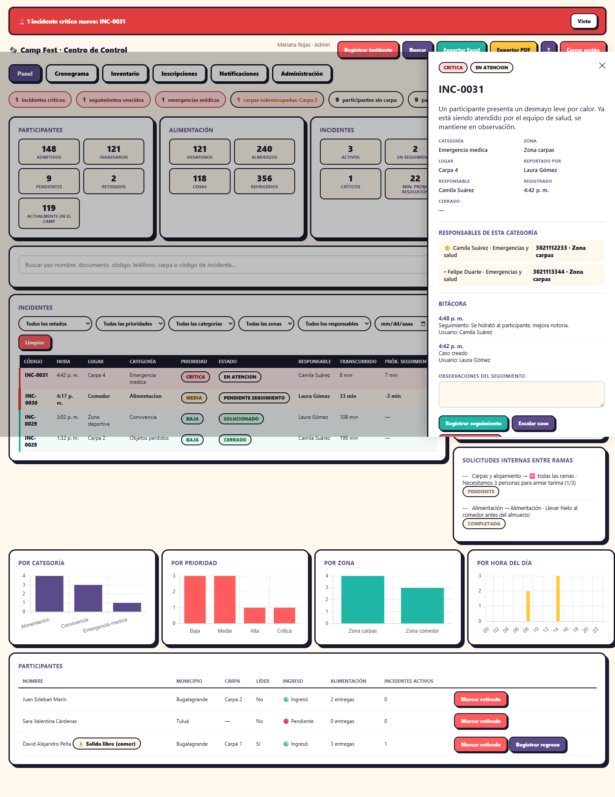
Ahí encuentras la descripción completa, los datos (categoría, zona, lugar, quién lo reportó, responsable, cuándo se registró y cuándo se cerró), la lista de responsables de esa categoría y la bitácora con todo el historial de seguimientos. Debajo hay un cuadro de texto para Observaciones del seguimiento y, según el estado del caso, distintos botones:
| Estado del caso | Botones que ves | Qué hacen |
|---|---|---|
| En atención / Pendiente de seguimiento / Escalado | Registrar seguimiento, Escalar caso, Marcar solucionado | Guardan tus observaciones y cambian el estado del caso. Ninguno pide confirmación adicional. |
| Solucionado | Cerrar caso | Cierra el caso definitivamente con tus observaciones finales. |
| Cerrado | Reabrir (solo administrador) | Vuelve a abrir un caso ya cerrado — solo disponible para el rol Admin. |
El botón Imprimir abre el diálogo de impresión del navegador con el detalle del incidente. Para cerrar el panel sin hacer nada, pulsa la ✕ de la esquina o haz clic fuera del panel.
Cola de seguimiento, actividad reciente y solicitudes internas
A la derecha de la tabla, tres bloques que también se actualizan solos:
- Cola de seguimiento: los casos abiertos ordenados por urgencia — cuánto falta o "Vencido hace X min". Clic para abrir el caso.
- Actividad reciente: un registro de lo último que pasó en el sistema (quién hizo qué y a qué hora).
- Solicitudes internas entre ramas: cuando un líder de logística pide ayuda a otra rama (lo ves en Pedir ayuda a otra rama), aparece aquí para que sepas qué se está coordinando.
Gráficos de incidentes
Cuatro gráficos de barras que se recalculan solos: Por categoría, Por prioridad, Por zona y Por hora del día — útiles para ver de un vistazo dónde se están concentrando los problemas.
Tabla de participantes: retirar y salidas libres
Al final de la pestaña Panel, la tabla completa de participantes con columnas Nombre, Municipio, Carpa, Líder, Ingreso, Alimentación (cuántas entregas lleva) e Incidentes activos.
- Para marcar que alguien se retiró del evento, pulsa Marcar retirado en su fila. Aparece una confirmación: "¿Confirmas que este participante se retira del evento?". Al aceptar, queda marcado con la etiqueta roja "Retirado".
- Si un participante está en salida libre (solo aplica a quienes viven en Bugalagrande, zona urbana), verás la etiqueta "🚶 Salida libre (motivo)" junto a su nombre y el botón Registrar regreso. Al pulsarlo y confirmar, se cierra su salida libre.
PestañaCronograma
Aquí se administra el itinerario del evento: qué actividades hay, qué debe hacer cada rama de logística para que salgan bien, y qué tan bien se está cumpliendo.
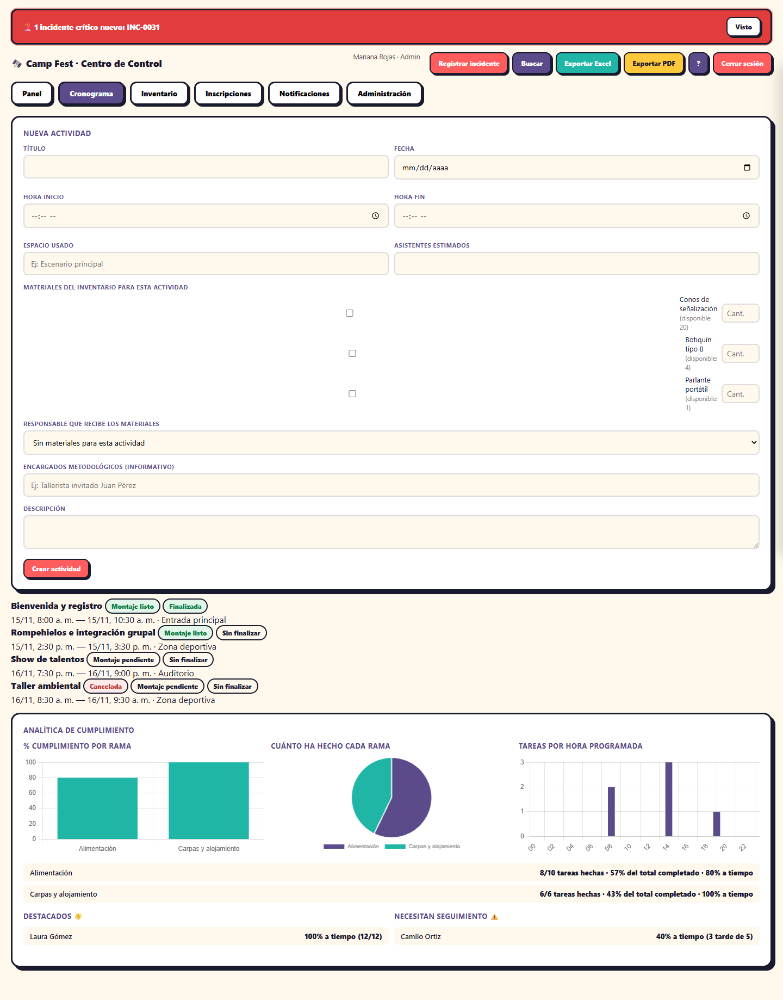
Crear una actividad nueva
- Completa Título, Fecha, Hora inicio y Hora fin (obligatorios).
- Opcional: Espacio usado y Asistentes estimados.
- Si esta actividad necesita materiales del inventario, marca el checkbox de cada material y escribe la Cant. a la derecha. Si marcas al menos uno, tienes que elegir también quién los recibe en Responsable que recibe los materiales — si no lo haces, el sistema te lo pide antes de guardar.
- Opcional: Encargados metodológicos (informativo) y Descripción.
- Pulsa Crear actividad. La actividad aparece de inmediato en la lista de abajo.
Abrir, cancelar y cerrar una actividad
Cada tarjeta de la lista muestra el título, si está Cancelada, si el Montaje está listo o pendiente, y si ya quedó Finalizada. Haz clic en cualquiera para ver el detalle completo.
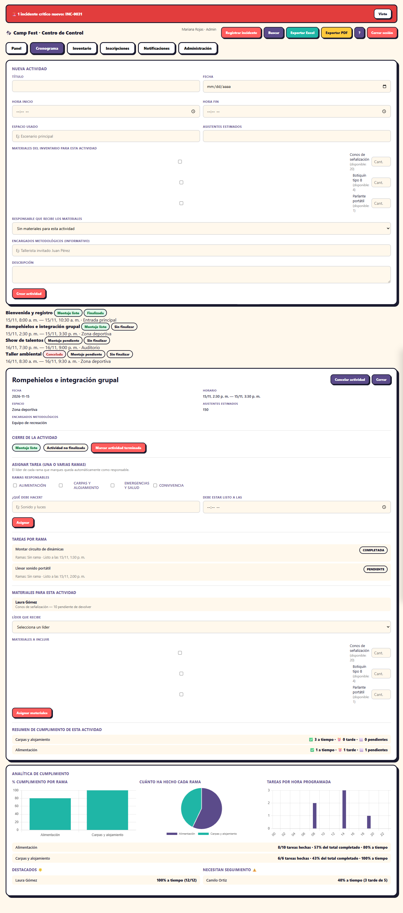
- Cancelar actividad (arriba a la derecha del detalle): pide confirmación — "Los materiales ya asignados para ella se liberarán automáticamente". Úsalo si la actividad no va a suceder.
- Marcar montaje listo: aparece cuando el montaje todavía está pendiente.
- Marcar actividad terminada: solo aparece después de que el montaje ya quedó listo.
Asignar una tarea a una o varias ramas
- Dentro del detalle de la actividad, marca las Ramas responsables que deban encargarse (puedes marcar varias).
- Escribe qué deben hacer en ¿Qué debe hacer? (obligatorio).
- Opcional: la hora en que Debe estar listo a las.
- Pulsa Asignar. La tarea aparece en "Tareas por rama"; el líder de cada rama marcada queda automáticamente como responsable de una subtarea de seguimiento.
Cada tarea de la lista se puede abrir con clic para ver quién ya participó, sus subtareas, y reasignar las ramas responsables con el botón Guardar ramas (debe quedar al menos una marcada).
Asignar materiales a una actividad
- Elige el Líder que recibe los materiales.
- Marca los materiales necesarios y escribe la cantidad de cada uno.
- Pulsa Asignar materiales.
Debajo verás, por líder, qué materiales tiene pendientes de devolver y cuáles ya devolvió.
Analítica de cumplimiento
Al final de Cronograma (solo Admin): un gráfico de % cumplimiento por rama, otro de cuánto ha hecho cada rama (proporción de tareas completadas), un histograma de tareas por hora programada, la lista detallada por rama, y dos listas de personas — Destacados 🌟 (mejor desempeño a tiempo) y Necesitan seguimiento ⚠️ (más atrasos).
PestañaInventario
El catálogo completo de materiales del evento: qué hay, cuánto queda disponible, quién tiene qué, y las solicitudes que hace el equipo de logística.
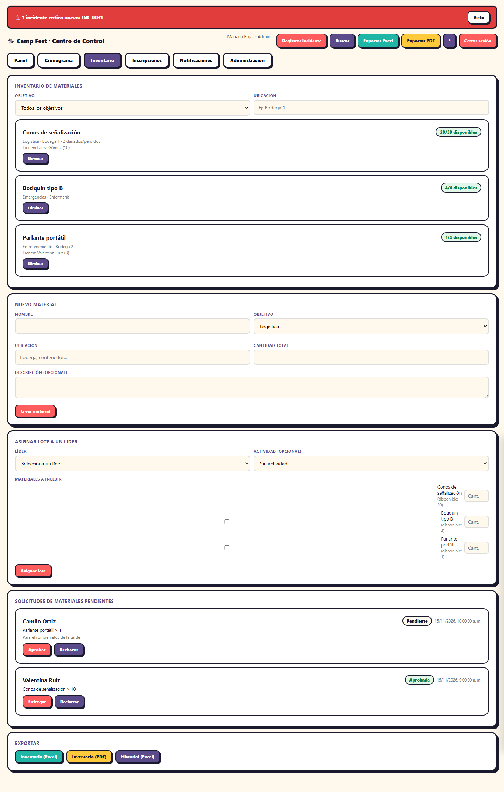
Filtrar el catálogo
Usa el selector Objetivo (logística, entretenimiento, auxilios, decoración, emergencias, utilidades) y el campo Ubicación para acotar la lista. Se filtra sola mientras escribes.
Crear un material nuevo
- Completa Nombre, Objetivo y Cantidad total (obligatorios).
- Opcional: Ubicación y Descripción.
- Pulsa Crear material.
Para quitar un material del inventario, pulsa Eliminar en su tarjeta y confirma.
Asignar un lote de materiales a un líder
- Elige el Líder que va a recibirlos.
- Opcional: vincula el lote a una Actividad.
- Marca los materiales y sus cantidades.
- Pulsa Asignar lote.
Resolver solicitudes de materiales
Cuando alguien de logística solicita materiales (ver Materiales en la sección de Logística), la solicitud aparece aquí con solicitante, ítems y notas.
- Aprobar: cuando la solicitud está pendiente.
- Entregar: cuando ya está aprobada — el lote queda a nombre del líder de la rama de quien solicitó.
- Rechazar: te pide un motivo (opcional) que queda registrado.
Exportar
Tres botones de descarga: Inventario (Excel), Inventario (PDF) e Historial (Excel) — este último con todos los movimientos de materiales del evento.
PestañaInscripciones
Toda la gestión de quién se inscribió, quién queda admitido, y el estado de los correos de confirmación.
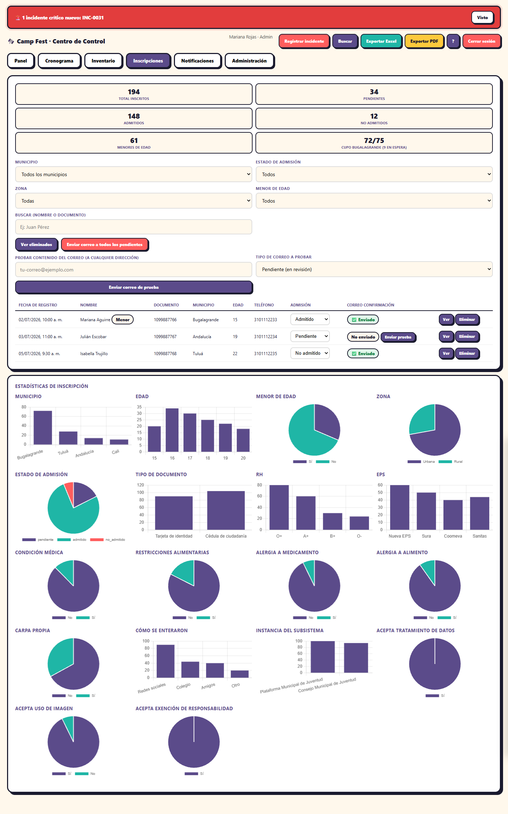
Indicadores rápidos (arriba)
Son clicables — tocar uno filtra la tabla automáticamente: Total inscritos, Pendientes, Admitidos, No admitidos, Menores de edad y Cupo Bugalagrande (admitidos/máximo, con los que están en espera).
Filtrar y buscar
Municipio, Estado de admisión, Zona, Menor de edad y un campo de Buscar por nombre o documento. El botón Ver eliminados alterna entre las inscripciones activas y las que se eliminaron (pero se pueden restaurar).
Cambiar el estado de admisión
- En la columna Admisión, elige el nuevo estado en el desplegable de la fila: Pendiente, Admitido, No admitido o Deserción.
- Si elegiste "No admitido" o "Deserción", el sistema te pide escribir un motivo — para "No admitido" ese motivo se incluye en el correo que recibe la persona; para "Deserción" es solo uso interno.
- El cambio se guarda solo, sin botón adicional.
Ver el detalle completo de una inscripción
Pulsa Ver en cualquier fila para desplegar todos los datos: correo personal, contactos de emergencia, RH, EPS, condiciones médicas y alergias, carpa propia, cómo se enteró del evento, quién la invitó, y — si no es de Bugalagrande — sus respuestas sobre liderazgo y motivación.
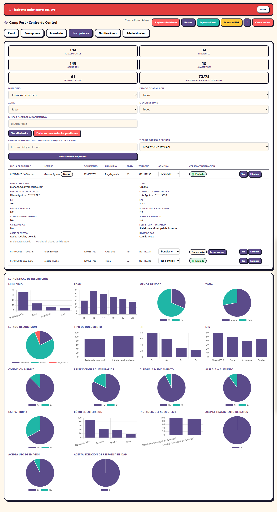
Correos de confirmación
La columna Correo confirmación muestra si ya se envió ("✅ Enviado"), si falló ("⚠️ Falló", con el motivo al pasar el cursor) o si no se ha enviado. Solo Admin ve los botones Enviar prueba (reenvía el correo real a esa persona, con confirmación previa) y Editar correo (para corregir una dirección mal escrita).
Eliminar y restaurar
Eliminar (solo Admin) pide confirmación y explica que se puede restaurar después. En la vista "Ver eliminados", cada fila tiene un botón Restaurar.
Gráficos de inscripciones
Al final de la pestaña, 18 gráficos que se recalculan solos con el total de inscritos: municipio, edad, menor de edad, zona, estado de admisión, tipo de documento, RH, EPS, condición médica, restricciones alimentarias, alergias, carpa propia, cómo se enteraron, instancia del subsistema, y las tres aceptaciones (tratamiento de datos, uso de imagen, exención de responsabilidad).
PestañaNotificaciones
Los avisos que se publican aquí aparecen directamente en el portal del campista — es la forma de comunicarte con todos los participantes a la vez.
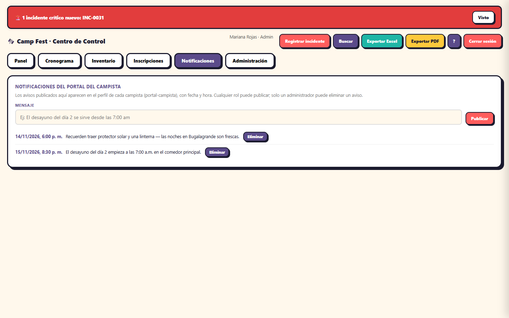
- Escribe el Mensaje en el campo de arriba.
- Pulsa Publicar. Aparece de inmediato en la lista, con fecha y hora, y ya es visible en el portal del campista.
Cualquier rol (Admin, Control o Logística) puede publicar avisos. Solo Admin ve el botón Eliminar junto a cada aviso — al confirmarlo, el aviso deja de mostrarse en el portal del campista.
PestañaAdministración
Configuración general del evento y del propio sistema. Esta pestaña solo existe para el rol Admin.
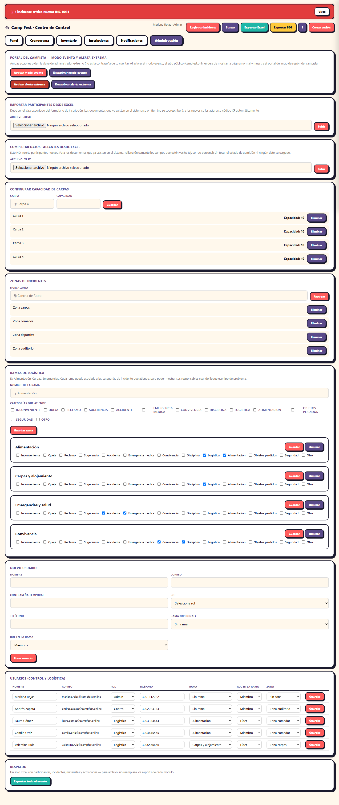
Modo evento y alerta extrema
- Activar modo evento / Desactivar modo evento: pide la clave y, para activarlo, una confirmación adicional.
- Activar alerta extrema: pide la clave y el mensaje de la alerta (la franja roja que ven todos). Desactivar alerta extrema solo pide la clave.
Importar participantes desde Excel
Sube el archivo .xlsx exportado directamente del formulario de inscripción. Los documentos que ya existen en el sistema se omiten (no se sobrescriben); a los nuevos se les asigna automáticamente su código CF. Al terminar, verás cuántos se importaron, cuántos ya existían y cuántos tuvieron error (con el número de fila).
Completar datos faltantes desde Excel
A diferencia de la anterior, esta no crea participantes nuevos: solo rellena los campos vacíos de personas que ya están en el sistema (por ejemplo un correo personal que faltaba), sin tocar el estado de admisión ni ningún dato ya cargado. El resultado te dice cuántos se actualizaron, cuántos quedaron sin cambios y cuántos no se encontraron.
Configurar capacidad de carpas
- Escribe el nombre de la Carpa y su Capacidad.
- Pulsa Guardar.
Estas son las carpas que después ve el equipo de logística al asignar participantes (ver Registro). Cada una se puede Eliminar con confirmación previa.
Zonas de incidentes
Escribe el nombre de una Nueva zona y pulsa Agregar — queda disponible en los selectores de zona de todo el sistema. Cada zona se puede Eliminar con confirmación.
Ramas de logística
Una rama es un equipo funcional (por ejemplo Alimentación, Carpas, Emergencias). Cada rama queda asociada a las categorías de incidente que atiende, para que el sistema sepa a quién avisar cuando llegue ese tipo de caso.
- Escribe el Nombre de la rama.
- Marca las Categorías que atiende (puede ser más de una).
- Pulsa Guardar rama.
Cada rama ya creada se puede editar (cambiar sus categorías y pulsar Guardar) o Eliminar — si la eliminas, los usuarios que estaban asignados a ella quedan sin rama.
Crear y editar usuarios de Centro de Control / Logística
- Completa Nombre, Correo y una Contraseña temporal (mínimo 6 caracteres).
- Elige el Rol: admin, control o logística.
- Opcional: Teléfono, Rama y Rol en la rama (Miembro o Líder) — esto solo importa para el rol logística.
- Pulsa Crear usuario. El mensaje te recuerda comunicar la contraseña por fuera del sistema (no queda visible en ningún lado después de creada).
Para editar a alguien ya existente, cambia lo que necesites directamente en su fila de la tabla Usuarios (control y logística) — nombre, rol, teléfono, rama, rol en la rama o zona — y pulsa Guardar en esa misma fila.
Respaldo
El botón Exportar todo el evento descarga un solo Excel con participantes, incidentes, materiales y actividades — pensado para archivo, no reemplaza los exports específicos de cada módulo.
Logística — Panel Logístico
Registro de participantes en el evento, comunicación con Centro de Control, tareas de tu rama y materiales.
Todo el equipo de logística — seas miembro o líder de tu rama — entra por esta misma herramienta y ve las cinco pestañas: Registro, Comunicación, Tareas, Mi cronograma y Materiales. Esta parte del manual describe lo que ve cualquier miembro; todo lo que además desbloquea ser líder está en la sección de líder de rama más abajo.
PestañaRegistro
Aquí se busca a un participante y se registran las cosas del día a día: si ya ingresó al camp, en qué carpa está, qué comidas ha recibido, y sus salidas libres si aplica.
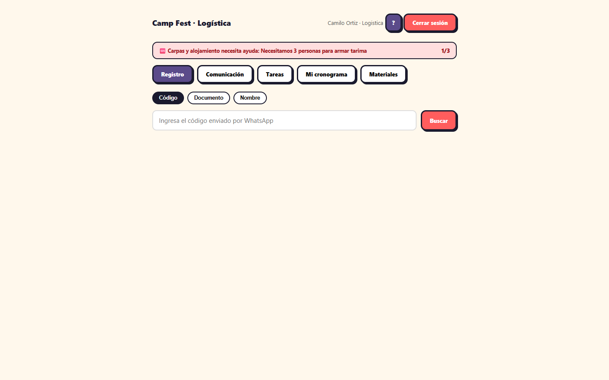
Buscar a un participante
- Elige cómo vas a buscar: Código, Documento o Nombre.
- Escribe el dato y pulsa Buscar.
- Toca el resultado correcto en la lista para abrir su ficha completa.
La ficha del participante
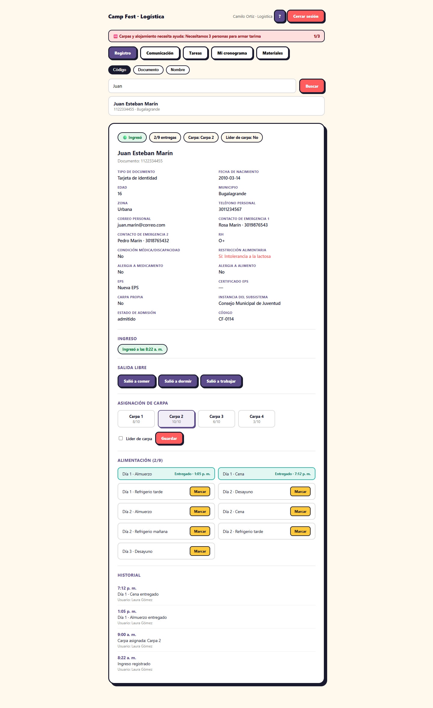
Arriba de todo, cuatro etiquetas rápidas: si ya ingresó, cuántas entregas de alimentación lleva, en qué carpa está y si es líder de carpa. Debajo, toda su información: documento, edad, municipio, contactos de emergencia, RH, EPS, condición médica, restricciones alimentarias y alergias (resaltadas si aplican), carpa propia, código, y más.
Registrar el ingreso
Si el participante todavía no ha llegado, verás el botón Registrar ingreso. Pulsa una sola vez cuando esa persona efectivamente llegue al camp — no se puede registrar dos veces (el sistema avisa si ya estaba registrado).
Asignar una carpa
- En la grilla de carpas, toca la que corresponda. Cada tarjeta muestra su ocupación actual ("8/10"); las que están llenas se ven distintas y no se pueden elegir salvo que sea la carpa que ya tenía asignada esa persona.
- Marca Líder de carpa si esa persona es la responsable de esa carpa.
- Pulsa Guardar.
Marcar alimentación entregada
La lista de "Alimentación (X/9)" muestra las 9 comidas del evento (desayunos, almuerzos, cenas y refrigerios de cada día). Pulsa Marcar junto a la comida que acabas de entregar — queda con la hora exacta y ya no se puede desmarcar por error, así que revisa antes de tocar.
Salida libre (solo participantes elegibles)
Este bloque solo aparece para quienes viven en Bugalagrande, zona urbana.
- Si la persona va a salir, pulsa el motivo correspondiente: Salió a comer, Salió a dormir o Salió a trabajar. Se pide confirmación antes de registrarlo.
- Mientras está afuera, verás la etiqueta "En salida libre desde [hora] (motivo: …)" y el botón Registrar regreso — pulsa cuando vuelva (también pide confirmación).
No se puede abrir una segunda salida libre mientras la anterior siga activa — hay que registrar el regreso primero.
Historial
Al final de la ficha, el registro cronológico de todo lo que se ha hecho con ese participante: quién lo hizo y a qué hora — ingreso, asignaciones de carpa, entregas de alimentación, salidas libres.
PestañaComunicación
El puente entre tu rama y el Centro de Control: reportar incidentes y coordinar ayuda entre ramas.
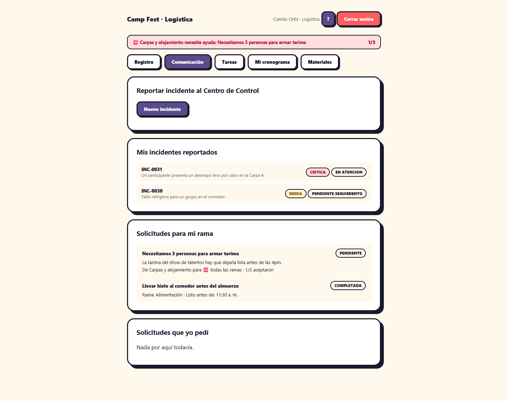
Reportar un incidente
- Pulsa Nuevo incidente.
- Elige Categoría — verás automáticamente quién en el Centro de Control atiende ese tipo de caso.
- Elige Prioridad, y opcionalmente Zona y Lugar específico.
- Si el incidente es sobre un participante puntual, búscalo en el campo Campista afectado (acepta código, documento o nombre) y tócalo en los resultados para vincularlo. Si ya tenías su ficha abierta en Registro, queda precargado automáticamente — puedes quitarlo con Quitar si no aplica.
- Escribe la Descripción.
- Pulsa Guardar incidente. Verás "Incidente enviado al Centro de Control" y el formulario se cierra solo después de un momento.
Mis incidentes reportados
La lista de todo lo que tú personalmente has reportado, con su código, descripción, prioridad y estado actual — para que puedas seguirle el pulso sin tener que preguntarle a nadie.
PestañaTareas
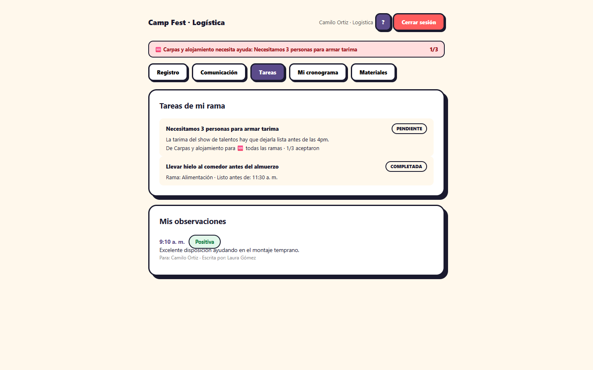
Como miembro, aquí ves las tareas de tu rama — lo que el administrador o tu líder asignó. Haz clic en cualquiera para ver el detalle: quién ya participó, las subtareas y los comentarios. Si tienes una subtarea asignada a tu nombre, puedes marcarla con Marcar hecha cuando termines. También puedes escribir comentarios en cualquier tarea de tu rama, y ves las observaciones que tu líder haya escrito sobre tu desempeño.
PestañaMi cronograma
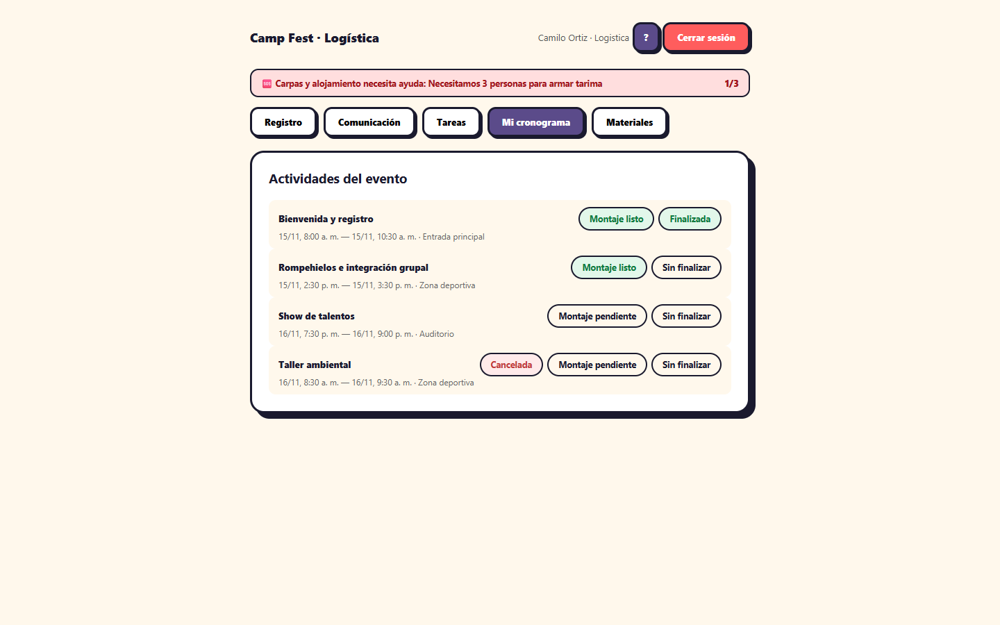
La lista completa de actividades del evento, con sus horarios y si el montaje/finalización ya quedaron listos. Al abrir una actividad, ves las tareas que le corresponden a tu propia rama para esa actividad específica — el mismo componente expandible de la pestaña Tareas.
PestañaMateriales
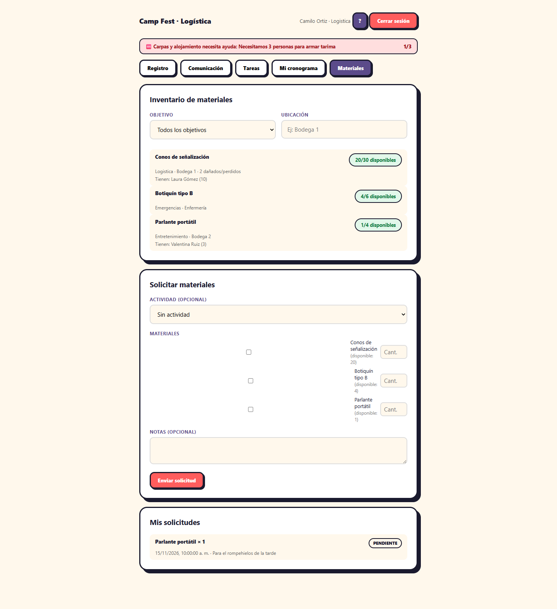
Ver el catálogo
Filtra por Objetivo o Ubicación para ver qué hay disponible, cuánto, y quién lo tiene actualmente.
Solicitar materiales
- Opcional: vincula la solicitud a una Actividad.
- Marca los materiales que necesitas y la cantidad de cada uno.
- Opcional: agrega Notas.
- Pulsa Solicitar.
Tu solicitud queda visible en Mis solicitudes con su estado: pendiente → aprobada → entregada (o rechazada). Esas transiciones las resuelve un administrador desde Centro de Control — cuando se entrega, el lote queda a nombre del líder de tu rama, sin importar quién de tu equipo la haya pedido.
Líder de rama
Todo lo de Logística, más las herramientas para coordinar a tu equipo.
Si tu cuenta tiene Rol en la rama = Líder (lo configura un administrador en Administración → Usuarios), entras al mismo Panel Logístico que el resto de tu equipo, pero con bloques adicionales que solo tú ves. Esta sección cubre únicamente esas funciones extra — todo lo demás ya está explicado en la sección de Logística.
ComunicaciónPedir ayuda a otra rama
Cuando tu rama necesita apoyo puntual de otro equipo (por ejemplo, manos extra para montar algo), tú — como líder — puedes pedirlo directamente desde el sistema, sin pasar por Centro de Control.
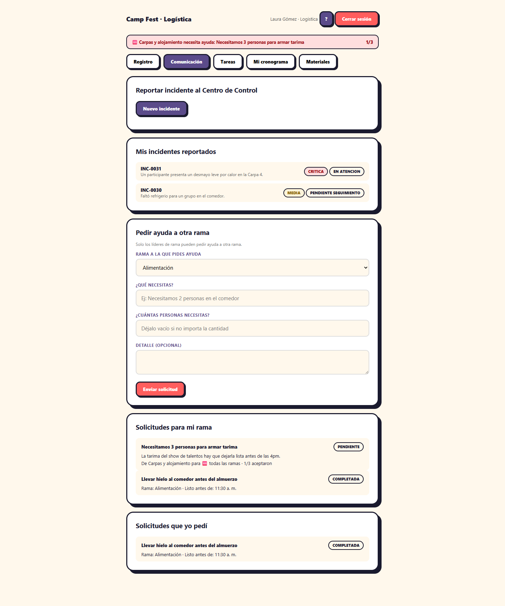
- Elige la Rama a la que pides ayuda — o selecciona "🆘 Todas las ramas (urgente)" si de verdad es urgente y no importa quién responda.
- Escribe ¿Qué necesitas? (obligatorio).
- Opcional: ¿Cuántas personas necesitas? — si lo dejas vacío, no importa la cantidad, cualquiera que se apunte cuenta.
- Opcional: agrega Detalle.
- Pulsa Enviar solicitud.
Tu solicitud aparece en Solicitudes que yo pedí, y en las pantallas de la rama destinataria como Solicitudes para mi rama — con una alerta especial en su barra superior si aún no se cubre el cupo de gente pedido. También queda visible para el Centro de Control en "Solicitudes internas entre ramas" del Panel.
TareasCrear tareas y escribir observaciones
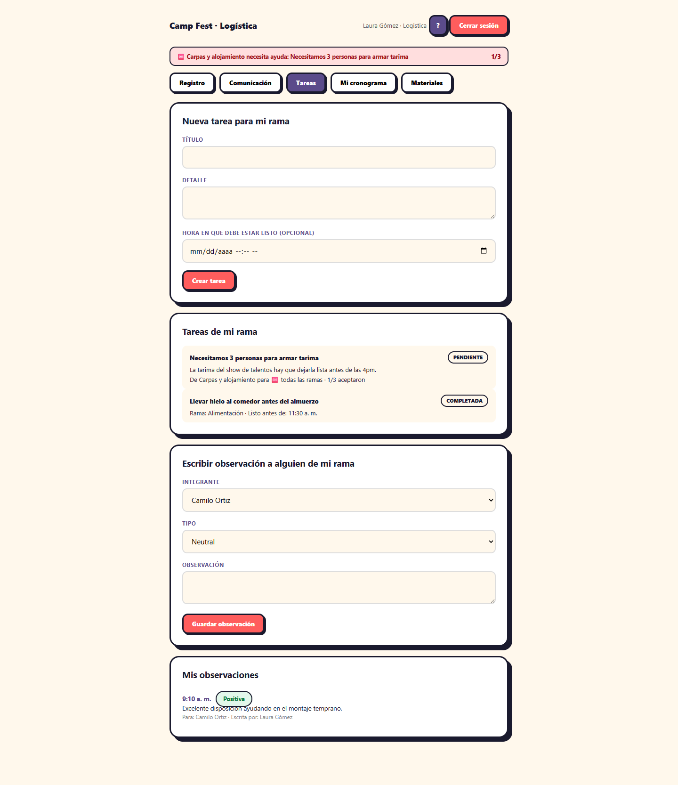
Crear una tarea interna para tu rama
- Escribe el Título (obligatorio).
- Opcional: Detalle y la Hora en que debe estar listo.
- Pulsa Crear tarea. Aparece en "Tareas de mi rama", visible para todo tu equipo.
Escribir una observación sobre alguien de tu equipo
Sirve para dejar registro del desempeño de tu gente — buenas y malas.
- Elige el Integrante (cualquiera de tu rama, menos tú mismo).
- Elige el Tipo: Positiva, Neutral o Negativa.
- Escribe la Observación.
- Pulsa Guardar. Queda visible para esa persona en su propia pestaña Tareas, y para ti en "Mis observaciones".
Tareas / ComunicaciónGestionar participaciones en tareas y solicitudes
Al abrir el detalle de cualquier tarea o solicitud de tu rama, como líder tienes control adicional sobre quién participa:
- Quitar: si alguien se marcó como participante por error, puedes quitar su check (pide confirmación).
- Dar check final: cierra el caso definitivamente. En una tarea de tu propia rama, lo puede dar cualquier líder de las ramas involucradas; en una solicitud de ayuda, lo da quien la pidió originalmente (o un admin).
- En las tareas (no en las solicitudes), puedes agregar subtareas nuevas y asignarlas a un integrante específico de tu rama.
MaterialesRecibir y devolver materiales — Mis lotes asignados
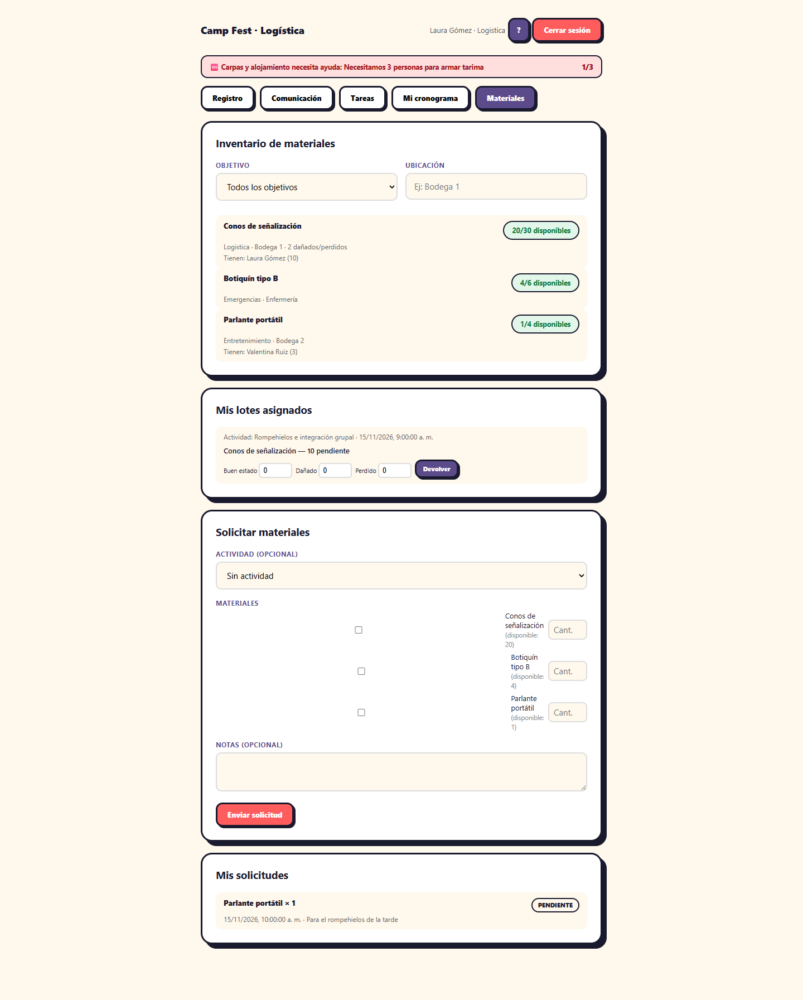
Cuando un administrador te asigna un lote (directamente o al entregar una solicitud de tu rama), aparece aquí con la actividad vinculada y cada material con su cantidad pendiente de devolver.
- Para cada línea pendiente, escribe cuánto vuelve en Buen estado, cuánto Dañado y cuánto Perdido — la suma no puede superar lo que tenías pendiente.
- Pulsa Devolver. El inventario general se actualiza al instante (lo dañado/perdido deja de estar disponible para otros).
Mi cronogramaMontaje y cierre de actividades
Dentro del detalle de una actividad donde tu rama tiene tareas asignadas, si eres líder ves los botones de cierre:
- Marcar montaje listo: cuando tu parte del montaje ya está lista.
- Marcar actividad terminada: solo disponible después de que el montaje quedó listo.
Estas mismas acciones también las puede hacer un administrador desde Centro de Control — no hace falta duplicar el aviso si ya lo marcaste tú.
Mi cronogramaVer "Mi cumplimiento"
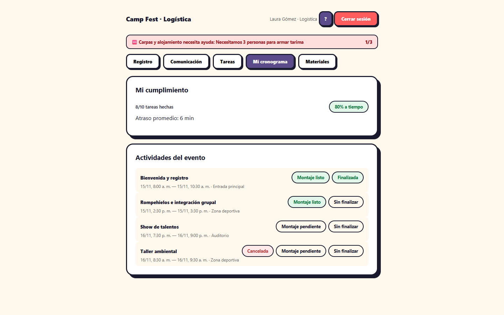
Solo para líderes: un resumen de cómo le está yendo a tu rama en el cronograma — cuántas tareas lleva hechas de cuántas en total, el porcentaje que se completó a tiempo (en verde si es 70% o más, en rojo si es menos), y el atraso promedio en minutos si lo hay. Es el mismo indicador que ve el administrador en la analítica de Cronograma, pero recortado a tu propia rama.